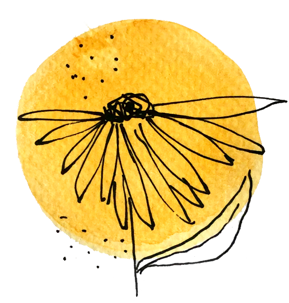
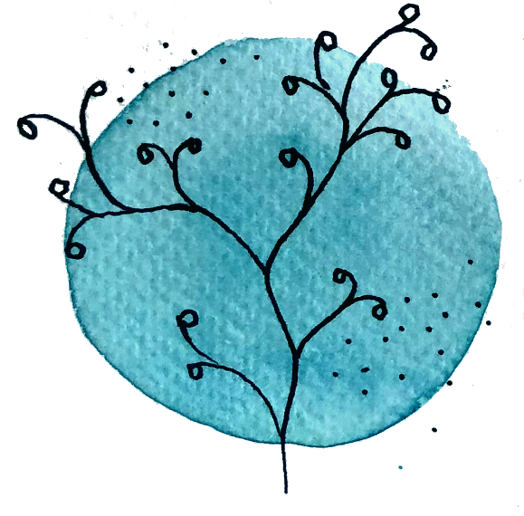

Com arribar
La Torre del Veguer
Farem la cerimonia i la celebració a la Torre del Veguer, un mas del sgle XIV a
Sant Pere de Ribes, tocant el terme de Vilanova i la Geltrú, a
la
Comarca del Garraf.
Aquest mas és actualment un celler que elavora vi i cava a partir de varietats
autòctones del Garraf amb les seves propies
vinyes ecològiques que es troben envoltant el celler amb el Mar Mediterrani com
a
teló de fons.
home
Urb. Torre del Veguer s/n
08810 Sant Pere de Ribes.
directions_car
Sortida 1A Autovia C-15. El mas disposa d'aparcament privat.
train Rodalies R2 estació de Vilanova i la Geltrú.

10 de setembre del 2022
Torre del Veguer

Allotjament
Horari
hotel Entre les 15h i les 16h assignació d'habitacions i deixar les coses.directions_bus A les 16.30h surt l'autocar de la casa de colònies cap al casament.
departure_board A les 3 de la matinada tornem amb autocar cap a la casa. Un cop a la casa s'ha de mantenir el silenci absolut.
local_cafe Diumenge al matí hi ha esmorzar al menjador de la casa i podem utilitzar la piscina.
Casa de colònies Artur Martorell
Qui ho necessiti es podrà quedar a dormir a la casa de colònies Artur Martorell, que es troba a Calafell. Hi haurà autocar d'anada i tornada des de la casa fins a la Torre del Veguer.És important que, si no ho heu fet, confirmeu amb el Marc o la Míriam si us quedareu a dormir abans del dia 10 d'agost.
home
Carrer Torredembarra, s/n, 43820 Calafell, Tarragona
directions_car
La casa disposa d'aparcament. Hi ha 15 minuts des de la casa de colònies fins a la Torre del Veguer.
train
Rodalies R2. Hi ha 20 minuts a peu des de l'estació de Calafell.

Horari
17h Arribada
17:30h Celebració
18:30h Fotos de grup
19h Aperitius i sopar
21h Música
3h Fi de festa
Contacte
Per qualsevol dubte o pregunta que no vulgueu fer-nos a nosaltres directament contacteu amb la Mercè al 608266998

Música
Col·labora amb la música que sonarà a la festa!
Si voleu fer aportacions ho podeu fer a través de transferència o bizum
Transferència
Bizum
ES54 3140 0001 9900 1545 1000
659600483 (Míriam)